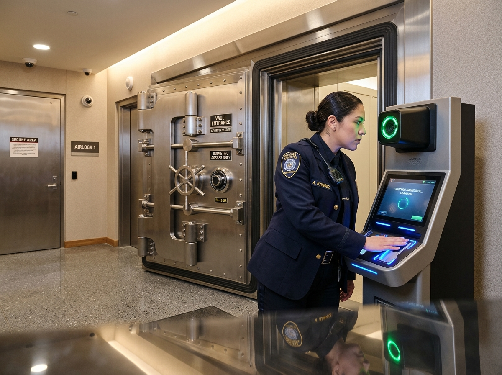
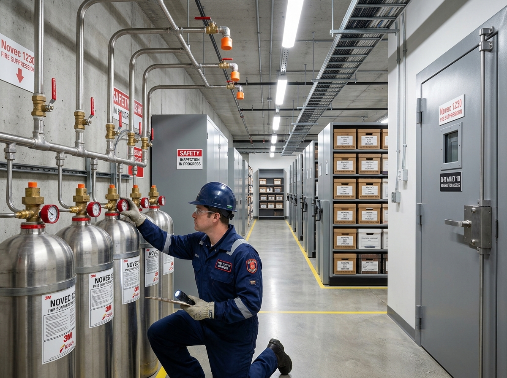
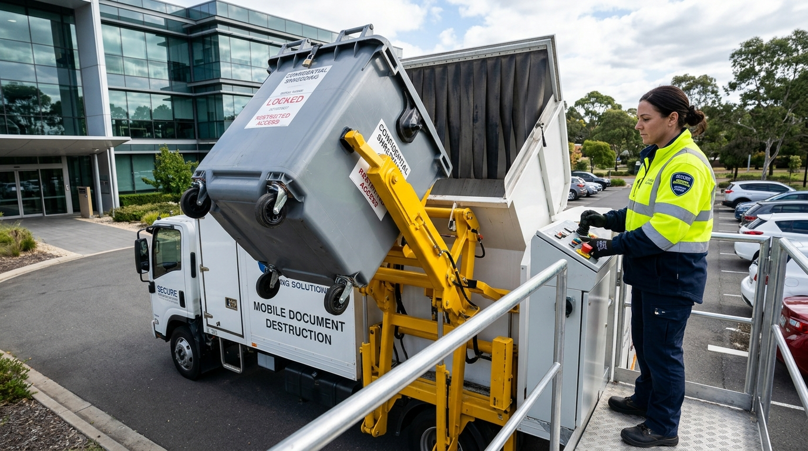
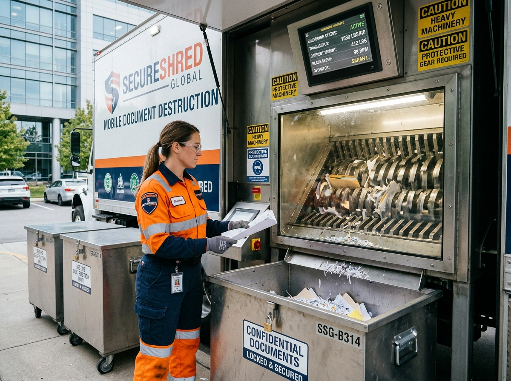
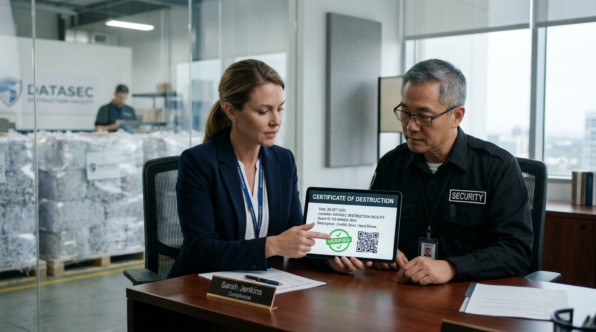

Secure Records Management You Can Count On
From physical document storage to digital transformation — we safeguard your critical business records with climate-controlled facilities, real-time tracking, and rapid retrieval services.

Comprehensive Records Management
End-to-end solutions designed to protect, organize, and optimize your document lifecycle from creation to compliant destruction.
Physical Storage
Climate-controlled, fire-protected vaults for storing your critical documents, media, and archival records with 24/7 surveillance.
Box Tracking
Real-time barcode scanning and inventory management so you always know the exact location and status of every stored box.
Document Retrieval
Rapid retrieval services with same-day delivery options. Request individual files or entire boxes through our client portal.
Digital Scanning
High-volume document digitization with OCR technology, making your physical archives searchable and accessible online.
Secure Destruction
NAID AAA certified document shredding with chain-of-custody certificates, ensuring full compliance with data privacy regulations.
Compliance Management
Automated retention scheduling, legal hold management, and audit-ready reporting to keep your records program compliant.
Bank-Grade Biometric Access & Airlock Control
Multi-factor dual-custodian authentication, subterranean biometric airlocks, and electronic time-locks guarding physical archives 24/7.

Dual Iris & Palm Scan
Requires simultaneous biometric verification from two certified custodians to disengage perimeter airlock doors.
Interlocking Blast Airlocks
Hermetically sealed dual-door interlock chambers prevent tailgating while preserving vault pressure and humidity.
Real-Time Audit Trail
Every biometric verification, door state change, and personnel timestamp is cryptographically logged to client portal.
Continuous Microclimate Telemetry & Clean Air
Paper fiber and historical parchment degrade rapidly under humidity spikes. Our archival chambers maintain continuous atmospheric equilibrium regulated to ISO 11799 standards.
Clean-Agent Novec 1230 Gas & Blast Integrity
Water sprinklers destroy paper records as swiftly as flames. ArchiVault utilizes waterless clean-agent gas systems that extinguish thermal events in under 10 seconds without residue or moisture.

Tamper-Evident Courier Handover & Pickup Verification
Your legal chain-of-custody starts the instant records leave your office. Background-checked couriers seal every carton with serialized locks and record dual signatures on-site.
On-Site Mobile Shredding with Verifiable Custody
Witness confidential document destruction directly outside your corporate facility doors. High-speed cross-cut blades, locked bin tippers, and instant notarized Certificates of Destruction.

Zero-Contact Bin Tipper
Specialists wheel locked security consoles to the mobile shredding unit. An automated hydraulic arm lifts and dumps contents directly into the sealed hopper without manual touching.

High-Torque Cross-Cut Chamber
Industrial rotary cutters pulverize thousands of pages into unrecoverable 30 mm² micro-particles. Client representatives can witness every batch in-person through armored glass or CCTV monitors.

Instant Legal E-Certificate
The moment destruction wraps up, an official Certificate of Destruction is digitally signed on-site and populated into your ArchiVault client portal for immediate audit compliance.
How It Works
Getting started with ArchiVault is quick and straightforward. Our streamlined onboarding gets your records secure in days, not weeks.
Consultation
We assess your records volume, compliance needs, and create a tailored storage plan.
Collection
Our team picks up your boxes with secure chain-of-custody documentation.
Storage & Index
Every box is barcoded, indexed, and placed in our climate-controlled vaults.
Access Anytime
Request retrievals, scans, or manage your inventory through our client portal.
Trusted by Industry Leaders
See what our clients have to say about our records management services and how we've helped transform their document workflows.
"ArchiVault transformed our records management. We went from a chaotic filing room to a fully indexed, retrievable archive in under two weeks."
"The same-day retrieval service is incredible. When we need a file for an audit, ArchiVault delivers within hours — every single time."
"Their digital scanning service saved us thousands of square feet of office space. We can now search 20 years of records in seconds."
Frequently Asked Questions
Find answers to the most common questions about our records management and storage services.
Our facilities feature 24/7 CCTV surveillance, biometric access controls, fire suppression systems, climate control, and strict chain-of-custody protocols. All digital records are encrypted with AES-256 standards.
Standard retrieval takes 24 hours. We also offer same-day and emergency 2-hour retrieval options. Digital copies of scanned documents can be delivered instantly through our client portal.
We store all types of business records including financial documents, legal files, medical records (HIPAA compliant), employee files, contracts, blueprints, and digital media like tapes and hard drives.
Yes, we provide NAID AAA certified document shredding with full chain-of-custody tracking. You receive a Certificate of Destruction for every batch processed, ensuring regulatory compliance.
Ready to Elevate Your Records Security?
Join over 2,400+ healthcare networks, financial institutions, and corporate leaders. Schedule a zero-obligation records audit or calculate tiered storage economics tailored to your box volume.